Many paths. One clear direction.Un parcours pluriel. Un cap très clair.Muchos caminos. Un rumbo claro.路走得很宽， 方向一直很清楚。
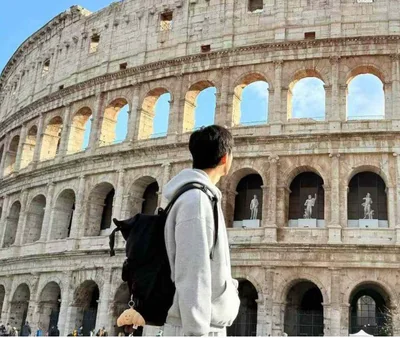
A face from the roadStill curious. Always moving.
Multilingual. IELTS 7.5 in English, DALF C1 in French, and Spanish at A2–B1. English and French are both working languages for me — I have used each in client conversations and business negotiations.
Multidisciplinary. I studied French and cross-border e-commerce as an undergraduate, moved into International Business for my master's, then spent a year studying International Law at Paris 1. I have always believed economics, management, and law belong in the same conversation: languages help me work with people, business and law show me how things run, and technology lets me build ideas with my own hands.
Multi-industry. I have worked on Finnish tech expansion and French-speaking export sales, sourced global senior AI talent for ByteDance’s Seed team, and supported TikTok LIVE with local talent sourcing in Germany, France, and the UK. Today I work in technical Sales at Tencent Cloud, mainly with media AIGC clients and AI Native startups.
Plurilingue. IELTS 7,5 en anglais, DALF C1 en français et espagnol niveau A2–B1. L’anglais et le français sont pour moi de vraies langues de travail, utilisées aussi bien dans les échanges clients que dans les négociations commerciales.
Pluridisciplinaire. J’ai étudié le français et l’e-commerce transfrontalier en licence, poursuivi un master de commerce international, puis passé un an à Paris 1 en droit international. J’ai toujours considéré que l’économie, la gestion et le droit allaient ensemble : les langues m’aident à travailler avec les gens, le commerce et le droit à comprendre comment les choses fonctionnent, et la technologie à construire moi-même ce que j’imagine.
Multi-sectoriel. J’ai travaillé sur le développement d’entreprises technologiques finlandaises et la vente export francophone, recherché des profils IA seniors dans le monde entier pour l’équipe Seed de ByteDance, puis accompagné TikTok LIVE dans le sourcing local de talents en Allemagne, en France et au Royaume-Uni. Aujourd’hui, je travaille en Sales technique chez Tencent Cloud, principalement avec des clients médias AIGC et des startups AI Native.
Plurilingüe. IELTS 7,5 en inglés, DALF C1 en francés y español de nivel A2–B1. El inglés y el francés son idiomas de trabajo para mí: he usado ambos tanto con clientes como en negociaciones comerciales.
Multidisciplinar. Estudié francés y comercio electrónico transfronterizo en la universidad, después hice un máster en Negocios Internacionales y pasé un año estudiando Derecho Internacional en París 1. Siempre he creído que economía, gestión y derecho van de la mano: los idiomas me ayudan a trabajar con personas, los negocios y el derecho a entender cómo funcionan las cosas y la tecnología a construir mis propias ideas.
Multisectorial. He trabajado en la expansión de empresas tecnológicas finlandesas y en ventas para mercados francófonos, busqué talento sénior de IA en todo el mundo para el equipo Seed de ByteDance y apoyé a TikTok LIVE con sourcing local de talento en Alemania, Francia y Reino Unido. Ahora trabajo en Sales técnico en Tencent Cloud, principalmente con clientes de medios AIGC y startups AI Native.
6 industries, one through line6 secteurs, un même fil rouge6 sectores, un mismo hilo在 6 个行业里做过事
4
4 languages I actually work in4 langues réellement pratiquées4 idiomas que uso de verdad用 4 种语言进入不同语境
🇨🇳 🇬🇧 🇫🇷 🇪🇸
16
16 countries, plenty of Vibe Coding16 pays, du Vibe Coding partout16 países, con Vibe Coding por todas partes16 个国家，每一站都有 Vibe Coding 的足迹
🇨🇳 🇫🇷 🇫🇮 🇩🇪 🇳🇱 🇧🇪 🇦🇹 🇨🇿 🇸🇰 🇭🇺 🇪🇸 🇮🇹 🇨🇭 🇳🇴 🇻🇦 🇱🇺
EducationFormationFormación学习经历
Learning across borders.Apprendre par-delà les frontières.Aprender sin fronteras.课堂不止一种， 也不止一个国家。
2025.09 – 2026.06
Université Paris 1 Panthéon-Sorbonne
International Law Master's — Exchange StudentMaster Droit International — Étudiant en échangeMáster Derecho Internacional — Estudiante de intercambio国际法硕士项目 · 交换生
QS World Law #17
International Trade Law · Comparative Law · HR Management · AI Law · EU Digital Information LawDroit du commerce international · Droit comparé · GRH · Droit de l'IA · Droit numérique européenDerecho comercio internacional · Derecho comparado · RRHH · Derecho IA · Derecho digital UE国际贸易法 · 比较法 · 人力资源管理 · 人工智能法 · 欧盟数字信息法
2024.09 – 2027.06
Southwestern University of Finance & Economics (SWUFE)Université du Sud-Ouest des Finances et de l'Économie (SWUFE)Universidad del Suroeste de Finanzas y Economía (SWUFE)西南财经大学（SWUFE）
Master of International Business · Recommended Admission (No Exam)Master Commerce International · Admission sur recommandationMáster Comercio Internacional · Admisión por recomendación国际商务硕士 · 推免录取
Economics A+211 University985 Discipline
2020.09 – 2024.06
Zhejiang Gongshang University (ZJSU)Université Gongshang du Zhejiang (ZJSU)Universidad Gongshang de Zhejiang (ZJSU)浙江工商大学（ZJSU）
Double Bachelor: French Language / Cross-border E-commerceDouble licence: Langue française / Commerce électronique transfrontalierDoble licenciatura: Lengua francesa / Comercio electrónico transfronterizo法语 / 跨境电子商务双学士
Top of ClassMajor de promotionPrimero de clase专业第一National ScholarshipBourse nationaleBeca nacional国家奖学金Provincial ScholarshipBourse provincialeBeca provincial省政府奖学金
Rotate across technical, product, and business tracks to build full-stack fluency in enterprise cloud solution sales for media and broadcastingRotation entre les fonctions techniques, produit et business pour maîtriser la vente de solutions cloud B2B destinées aux médias et à la diffusionRotación entre funciones técnicas, de producto y negocio para desarrollar una visión integral de la venta B2B de soluciones cloud para medios y radiodifusión在技术、产品和商务之间轮岗，补齐一套面向传媒与广电客户的云方案视角
Work with direct enterprise clients across real-time communication, live streaming, video-on-demand, and media processing solutionsAccompagnement de clients entreprises sur la communication en temps réel, le streaming, la vidéo à la demande et le traitement médiaTrabajo con clientes empresariales en comunicación en tiempo real, streaming, vídeo bajo demanda y procesamiento multimedia跟进实时音视频、直播、点播和媒体处理等场景，和企业客户一起把需求落到方案里
Connect technical architecture, product positioning, and commercial strategy through structured rotations and mentor-guided projectsConnexion entre architecture technique, positionnement produit et stratégie commerciale grâce à des rotations structurées et des projets mentorésConexión de arquitectura técnica, posicionamiento de producto y estrategia comercial mediante rotaciones estructuradas y proyectos con mentoría一边学架构和产品，一边练定位与销售，试着把复杂技术讲成客户听得懂、也愿意买单的方案
ByteDance / TikTok
Global Talent AcquisitionAcquisition de Talents InternationauxAtracción de Talento Global全球 AI 人才寻访
2025.05 – 2025.08 · Chengdu / San Jose (Remote)
Built an AI talent database covering 400+ professors, 900+ PhDs and 200+ Master's students for Seed AI Research TeamConstruit une base de données de talents IA de 400+ professeurs, 900+ doctorants et 200+ master pour l'équipe Seed AI ResearchConstruí una base de datos de talento IA con más de 400 profesores, 900 doctorandos y 200 másters para el equipo Seed AI Research给 Seed AI 团队搭了一张全球人才地图：400+ 教授、900+ 博士和 200+ 硕士
Supported TikTok LIVE talent sourcing across Germany, France and the UK; developed deep knowledge of European social media behaviorSoutien au sourcing TikTok LIVE en Allemagne, France et Royaume-Uni ; connaissance approfondie des comportements européens sur les réseaux sociauxApoyé el sourcing de talento para TikTok LIVE en Alemania, Francia y Reino Unido; desarrollé conocimiento del comportamiento europeo en redes sociales为 TikTok LIVE 在德国、法国和英国找人，也顺手摸清了欧洲用户怎么使用社交媒体
Alliance Française de Chengdu
Sino-French Cultural CoordinationCoordinateur culturel franco-chinoisCoordinador cultural sino-francés中法文化项目
2024.09 – 2025.03 · Chengdu
Planned and executed 5 Sino-French cultural exchange events, serving 800+ participantsPlanification et exécution de 5 événements d'échange culturel franco-chinois, avec 800+ participantsPlanifiqué y ejecuté 5 eventos de intercambio cultural sino-francés con más de 800 participantes从策划到落地做了 5 场中法文化活动，来了 800 多位参与者
Managed bilingual communications, customer relationships, and co-authored a Sino-French cultural handbookGestion des communications bilingues, des relations clients et co-rédaction d'un manuel culturel franco-chinoisGestioné comunicaciones bilingües, relaciones con clientes y co-redacté un manual cultural sino-francés用中法双语和学员、合作方打交道，也一起写了一本中法文化手册
Market Union
French-speaking Export SalesChargée d'export francophoneEjecutiva de exportación francófona法语区外贸销售
2024.09 – 2025.03 · Ningbo
Built long-term partnerships with 5+ French clients, facilitating over $1M in ordersDéveloppement de partenariats durables avec 5+ clients français, facilitant plus d'1 M$ de commandesDesarrollé alianzas con más de 5 clientes franceses, facilitando pedidos por más de 1 millón de dólares把 5+ 法国客户做成长线合作，累计推动超过 100 万美元的订单
Sourced and evaluated suppliers via 1688 and ERP systems; coordinated factory visits in Yiwu and CixiSourcing et évaluation de fournisseurs via 1688 et ERP ; coordination de visites d'usines à Yiwu et CixiSeleccioné y evalué proveedores con 1688 y ERP; coordiné visitas a fábricas en Yiwu y Cixi在 1688 和 ERP 里找供应商、比产品，也陪客户跑过义乌和慈溪的工厂
Mingle Advisors
Sino-Finnish Project ManagerChargée de projet sino-finlandaisGestora de proyectos sino-finlandeses中芬项目经理
2023.11 – 2024.03 · Hangzhou
Represented Business Finland; helped 8 Finnish ICT companies enter the Chinese marketReprésentation de Business Finland ; aide à l'entrée de 8 entreprises finlandaises ICT sur le marché chinoisRepresenté a Business Finland; ayudé a 8 empresas finlandesas de TIC a entrar al mercado chino陪 8 家芬兰 ICT 公司进入中国市场，从找方向到对接资源一路跟进
Built and maintained EN/ZH/FI stakeholder communication across 3 time zones simultaneouslyConstruction et maintien de la communication EN/ZH/FI entre parties prenantes dans 3 fuseaux horairesCreación y mantenimiento de comunicación EN/ZH/FI entre partes interesadas en 3 zonas horarias横跨 3 个时区，用中、英、芬三种语言把人和事接起来
AI PortfolioProjets IAProyectos IAAI 作品
Building with AI, not just using it.Construire avec l'IA, pas seulement l'utiliser.Construir con IA, no solo usarla.我不只用 AI， 也把它做成真正能用的东西。
AI ProductsProduits IAProductos de IA可直接体验的 AI 产品
End-to-end tools for sales, language learning, and personal productivity — designed around repeatable decisions, not one-off demos.Des produits complets pour la vente, les langues et la productivité — pensés pour des usages récurrents, pas pour une simple démo.Productos completos para ventas, idiomas y productividad — pensados para decisiones recurrentes, no para una demo puntual.围绕销售、语言学习和个人效率，把 AI 接进完整工作流，不做只能演示一次的 Demo。
AI Sales · Customer WorkflowVente IA · Suivi ClientVentas IA · Gestión de ClientesAI 销售助手 · 客户跟进
Sales Buddy
An AI account-intelligence workspace built for frontline B2B sales. It converts voice or free-form updates into structured CRM records, maps stakeholders, prioritizes opportunities, recommends the next action, and produces a complete account report. I have used it to progress 40+ accounts and map over RMB 12M in IT scale; it won first place in the Marketing & Customer Acquisition track of a Tencent Hackathon and advanced to the in-person showcase.Un cockpit d’intelligence client conçu pour les commerciaux B2B. À partir d’une note libre ou vocale, il structure le CRM, cartographie les décideurs, hiérarchise les opportunités, recommande la prochaine action et génère un rapport client complet. Je l’ai utilisé pour faire avancer plus de 40 comptes et qualifier plus de 12 M RMB de parc IT ; le projet a remporté le volet marketing et acquisition d’un Hackathon Tencent avant d’être retenu pour la finale présentielle.Un centro de inteligencia de cuentas para ventas B2B. Convierte actualizaciones de voz o texto libre en registros de CRM, mapea a los decisores, prioriza oportunidades, propone la siguiente acción y genera un informe integral de cada cuenta. Lo he usado para impulsar más de 40 clientes y dimensionar más de 12 millones de RMB en infraestructura IT; ganó la categoría de marketing y captación de un Hackathon de Tencent y pasó a la presentación presencial.面向一线 ToB 销售的客户推进工作台。它把语音或自然语言进展转成结构化 CRM 记录，梳理关键人、判断机会优先级、给出下一步动作，并一键生成客户全景报告。我已经用它推进 40+ 客户、摸排 1200 万+ IT 体量；项目获腾讯 Hackathon 营销拓客赛道第一名，并入选线下路演。
🤖 AI Extraction🎯 Next Action📥 CRM Import🕸️ Relationship Map📄 PDF · Word
The hardest part of learning a language is often not knowing what a word means, but knowing how it will land. LingoVibe brings definition, tone, social setting, cultural associations, and cross-language differences into one view for learners of English, French, and Spanish. Whether writing an email, joining a conversation, or decoding online language, users can see when a phrase feels natural, when it may sound awkward or offensive, and how the same intent travels across cultures — moving from correct translation to confident expression.Le plus difficile dans une langue n’est souvent pas de comprendre un mot, mais de savoir comment il sera reçu. LingoVibe réunit sens, registre, contexte social, références culturelles et différences entre l’anglais, le français et l’espagnol. Pour écrire un e-mail, participer à une conversation ou décoder une expression en ligne, l’utilisateur comprend ce qui sonne naturel, maladroit ou potentiellement offensant, et comment une même intention voyage d’une culture à l’autre — au-delà de la traduction correcte, vers une expression vraiment sûre.Lo más difícil de aprender un idioma no siempre es saber qué significa una palabra, sino entender cómo va a sonar. LingoVibe reúne significado, tono, contexto social, asociaciones culturales y diferencias entre inglés, francés y español. Al escribir un correo, entrar en una conversación o descifrar una expresión de internet, el usuario puede saber qué resulta natural, qué puede sonar extraño u ofensivo y cómo cambia una misma intención entre culturas — pasando de traducir correctamente a expresarse con seguridad.学语言最难的，往往不是“不认识”，而是不知道一个词在真实交流里听起来是什么感觉。LingoVibe 面向英、法、西三语学习者，把词义、语气强弱、使用场景、文化联想和跨语言差异放在同一个页面里。无论是写邮件、聊天，还是理解网络表达，用户都能判断一个词什么时候自然、什么时候可能显得生硬或冒犯，以及同一种意思换一种语言该怎么说——从“翻译正确”走到“表达得体”。
🗣️ Tone & Register🌍 Cultural Context🔁 Cross-language Comparison💬 Real-world Usage
Most productivity tools only record whether something got done. Jiake Orbit is designed to reveal what keeps a person moving and where their attention actually goes. It brings habits, tasks, quick ideas, and evening reflection into one daily rhythm: define the next action, capture thoughts in Spark before they disappear, then review the day with evidence rather than memory. Streaks grow a personal universe and badges make long-term progress visible — not to push users to do more, but to help them discover what is worth sustaining and build a rhythm that genuinely fits.La plupart des outils de productivité se contentent de noter si une tâche est faite. Jiake Orbit cherche plutôt à montrer ce qui entretient l’élan et où part réellement l’attention. Habitudes, tâches, idées rapides et bilan du soir suivent un même rythme quotidien : définir la prochaine action, saisir une pensée dans Spark avant qu’elle ne disparaisse, puis relire sa journée à partir de traces concrètes. Les séries font grandir un univers personnel et les badges rendent les progrès visibles — non pour en faire toujours plus, mais pour comprendre ce qui mérite de durer et construire un rythme qui nous ressemble.La mayoría de las herramientas de productividad solo registran si algo se hizo. Jiake Orbit busca mostrar qué mantiene el impulso y dónde va realmente la atención. Hábitos, tareas, ideas rápidas y reflexión nocturna forman un mismo ritmo diario: definir la siguiente acción, guardar una idea en Spark antes de perderla y revisar el día con datos en lugar de memoria. Las rachas hacen crecer un universo personal y las insignias vuelven visible el progreso a largo plazo — no para hacer más por hacer, sino para descubrir qué merece continuidad y construir un ritmo propio.很多效率工具只记录“做没做”，Jiake Orbit 更想回答：什么让人持续行动，注意力到底去了哪里。它把习惯、任务、灵感捕捉和晚间复盘放进一条日常节奏里：先明确下一步，白天用 Spark 接住稍纵即逝的想法，晚上再根据真实记录回看一天。连续行动会推进自己的星球，成就徽章让长期变化变得看得见——不是催你做得更多，而是帮你发现什么值得坚持，慢慢形成真正适合自己的节奏。
Agents & AutomationsAgents & automatisationsAgentes y automatizacionesAI Agent 与自动化
Agents that retrieve context, execute repeatable workflows, and deliver usable outputs — not just another chat window.Des agents qui retrouvent le bon contexte, exécutent des workflows récurrents et livrent un résultat exploitable — au-delà du simple chat.Agentes que recuperan contexto, ejecutan flujos repetibles y entregan resultados utilizables — más allá de otra ventana de chat.让 Agent 找到所需信息、跑完重复流程并交付可用结果，不停在聊天框里。
04
AI Agent · Knowledge RetrievalAgent IA · Recherche de ConnaissancesAgente IA · Recuperación de ConocimientoAI Agent · 知识库问答
Feishu KB RAG
A reusable Hermes Agent skill that turns a Feishu/Lark knowledge base into a practical retrieval layer. A natural-language question triggers semantic search, relevance ranking, and synthesis across internal documents, replacing manual folder-hunting with a concise answer grounded in the team’s own material.Un skill réutilisable pour Hermes Agent qui transforme une base Feishu/Lark en véritable couche de recherche. Une question en langage naturel déclenche recherche sémantique, classement par pertinence et synthèse de plusieurs documents internes — sans avoir à fouiller les dossiers un par un.Un skill reutilizable para Hermes Agent que convierte una base de Feishu/Lark en una capa de recuperación útil. Una pregunta en lenguaje natural activa búsqueda semántica, ranking por relevancia y síntesis de documentos internos, sustituyendo la búsqueda manual entre carpetas por una respuesta basada en el conocimiento del equipo.把飞书知识库变成真正可调用的检索层。用户用自然语言提问后，Hermes Agent 会依次完成语义搜索、相关性排序和跨文档总结，把“翻目录、找旧文档”的过程压缩成一条基于内部资料的答案；整个能力被封装为可复用 Skill。
AI Agent · Workflow AutomationAgent IA · AutomatisationAgente IA · AutomatizaciónAI Agent · 自动备课
Tutoring Prep Agent
A local agent that runs the full tutoring-prep pipeline with Claude Desktop and filesystem MCP: read the student context and teaching materials, assemble a structured lesson plan, save the deliverables, and draft the follow-up email. The workflow cuts repetitive preparation from roughly 30 minutes to under 5 while keeping the teacher in control of the final output.Un agent local qui exécute toute la préparation avec Claude Desktop et filesystem MCP : lecture du contexte élève et des supports, création d’un plan de cours structuré, sauvegarde des livrables et rédaction de l’e-mail de suivi. Le temps consacré aux tâches répétitives passe d’environ 30 minutes à moins de 5, tout en laissant la validation finale au professeur.Un agente local que ejecuta todo el flujo de preparación con Claude Desktop y filesystem MCP: lee el contexto del alumno y los materiales, crea un plan de clase estructurado, guarda los entregables y redacta el correo de seguimiento. Reduce el trabajo repetitivo de unos 30 minutos a menos de 5, manteniendo al profesor al mando del resultado final.用 Claude Desktop + filesystem MCP 跑通一条本地备课流水线：读取学生情况和教学材料，生成结构化教案，保存交付文件，再起草课后邮件。重复准备时间从约 30 分钟降到 5 分钟以内，同时保留老师对最终内容的审核权。
🤖 Claude Desktop📂 Filesystem MCP📝 Auto Lesson Plan✉️ Auto Email⏱️ 30min → 5min
AI Agent · Travel PlanningAgent IA · Planification VoyageAgente IA · Planificación de ViajesAI Agent · 穷游规划
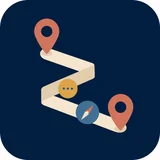
Budget Travel Planner
A Hermes Agent skill for turning a loose travel idea into an executable student-budget itinerary. It balances dates, budget, transport, and interests; estimates daily spend, builds a sensible route, surfaces less touristy alternatives, and recalculates the plan when time or money changes.Un skill Hermes Agent qui transforme une envie de voyage encore floue en itinéraire étudiant réellement exécutable. Il arbitre entre dates, budget, transport et centres d’intérêt, estime les dépenses quotidiennes, construit un parcours cohérent, propose des alternatives moins touristiques et recalcule le tout dès qu’une contrainte change.Un skill de Hermes Agent que convierte una idea de viaje todavía vaga en un itinerario estudiantil que se puede ejecutar. Equilibra fechas, presupuesto, transporte e intereses, estima el gasto diario, diseña una ruta coherente, propone alternativas menos turísticas y recalcula el plan cuando cambian el tiempo o el dinero.把一句模糊的旅行想法变成能直接执行的学生预算行程。Agent 会同时权衡日期、预算、交通和兴趣，估算每日花费、排出合理路线、补充不那么游客化的备选点；时间或预算一变，也能重新计算整套计划。
走过的地方Out into the worldÀ la découverte du mondeA explorar el mundo
从海边出发， 世界慢慢展开。From the coast. Into the world.Depuis la côte. Vers le monde.Desde la costa. Hacia el mundo.
语言的边界，就是我世界的边界。 点击地图上的一站，看看我在那里学过什么、做过什么。The limits of my languages are the limits of my world. Pick a stop to explore the places, ideas and projects along the way.Les limites de mes langues sont celles de mon monde. Choisissez une étape pour découvrir les lieux, idées et projets du voyage.Los límites de mis idiomas son los de mi mundo. Elige una parada y descubre los lugares, ideas y proyectos del camino.
Earth / A personal atlas
My world keeps getting wider.
The limits of my language are the limits of my world.
Choose a stop to turn the globe and read its story.
Reading & PodcastsLecture & PodcastsLectura y Podcasts阅读与播客
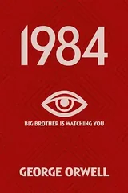
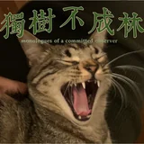
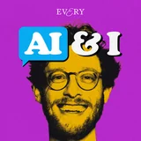
Books and voices that shaped how I think — across economics, philosophy, and the art of paying attention.Livres et voix qui ont façonné ma pensée — entre économie, philosophie et l'art de faire attention.Libros y voces que moldearon mi forma de pensar — entre economía, filosofía y el arte de prestar atención.有些书帮我想明白问题，有些播客只是陪我走很长的路。经济、哲学，还有怎么把注意力放回真正重要的事。
View picks →Voir mes choix →Ver selección →翻翻我的书单 →
🎬
Films & SeriesCinéma & SériesCine y Series电影与剧集
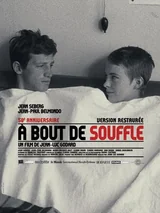
From French spy thrillers to Japanese slow cinema — my watchlist crosses borders just like I do.Des thrillers d'espionnage français au cinéma lent japonais — ma liste traverse les frontières comme moi.De los thrillers de espionaje franceses al cine lento japonés — mi lista cruza fronteras igual que yo.从法国谍战剧看到日本慢电影，我的片单和我一样，很少老老实实待在一个国家。
View picks →Voir mes choix →Ver selección →看看我的片单 →
🏀
Basketball & RunningBasket & CourseBaloncesto y Running篮球与跑步
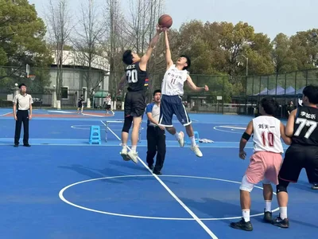
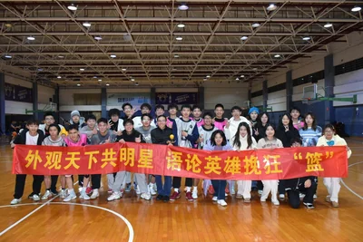
Former member of the university track and field team and college basketball team. The court and the road both teach the same thing — show up, stay consistent, trust the process.Ancien membre de l'équipe universitaire d'athlétisme et de basket-ball. Le terrain et la route enseignent la même chose — être présent, rester régulier, faire confiance au processus.Ex miembro del equipo universitario de atletismo y de baloncesto. La cancha y la carretera enseñan lo mismo — aparecer, ser constante, confiar en el proceso.以前在校田径队和篮球队。跑道和球场教会我的其实是同一件事：先出现，再坚持，慢慢就会有结果。
View photos →Voir photos →Ver fotos →看看球场与跑道 →
✈️
TravelVoyagesViajes旅行
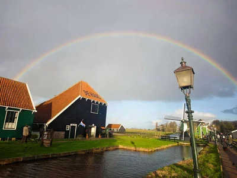
🇨🇳 🇫🇷 🇫🇮 🇩🇪 🇳🇱 🇧🇪 🇦🇹 🇨🇿 🇸🇰 🇭🇺 🇪🇸 🇮🇹 🇨🇭 🇳🇴 🇻🇦 🇱🇺
16 countries and counting. Not just tourism — each trip is a field study in culture, language, and how people build their worlds.16 pays, et ce n'est pas fini. Chaque voyage est une étude de terrain sur la culture et la langue.16 países y contando. Cada viaje es un estudio de campo sobre cultura, idioma y perspectivas.已经走过 16 个国家，还没有停下来的打算。旅行对我不只是打卡，更像换一个地方观察人、语言和生活。
📚 Reading & PodcastsLecture & PodcastsLectura y Podcasts阅读与播客
📖 Books📖 Livres📖 Libros📖 书籍
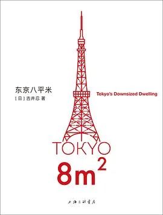
東京八平米
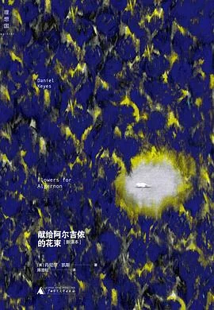
Flowers for Algernon
Le Mythe de Sisyphe
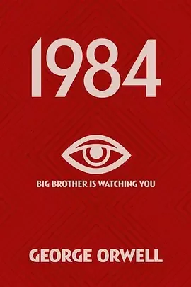
1984
Be Water, My Friend
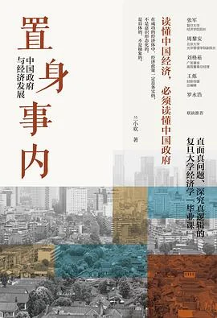
置身事内
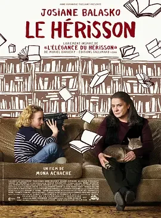
Le Hérisson
因果报应
🎙️ Podcasts🎙️ Podcasts🎙️ Podcasts🎙️ 播客
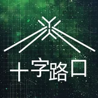
十字路口 Crossing
Cross-cultural perspectives on China and the worldPerspectives transculturelles sur la Chine et le mondePerspectivas interculturales sobre China y el mundo从文化差异聊中国，也聊世界
独树不成林
Literary conversations beyond the mainstreamConversations littéraires hors des sentiers battusConversaciones literarias fuera de lo común主流之外，认真聊文学
张小珺商业访谈录
In-depth business interviews with Chinese entrepreneursEntretiens approfondis avec des entrepreneurs chinoisEntrevistas empresariales con emprendedores chinos和中国创业者坐下来聊透一件事
AI&I
Exploring the intersection of AI and human identityExplorer l'intersection entre l'IA et l'identité humaineExplorando la intersección entre IA e identidad humanaAI 变得越来越像人时，我们怎么理解自己
🎬 Films & SeriesCinéma & SériesCine y Series电影与剧集
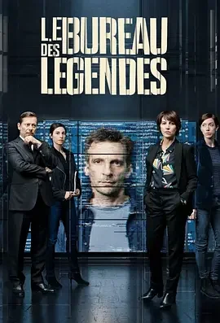
Le Bureau des Légendes
⭐ Favourite
House of Cards
夜明けのすべて
Le Hérisson
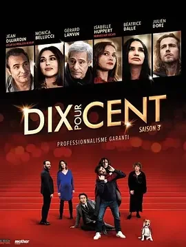
Dix Pour Cent
Maharaja
À bout de souffle
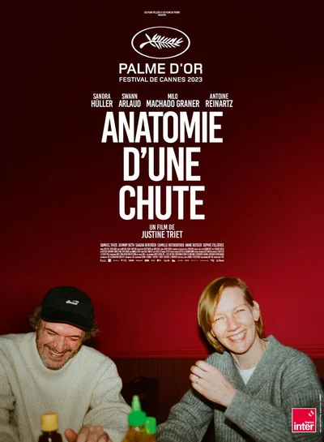
Anatomie d'une chute
🏀 Basketball & RunningBasket & CourseBaloncesto y Running篮球与跑步
🏀 Basketball
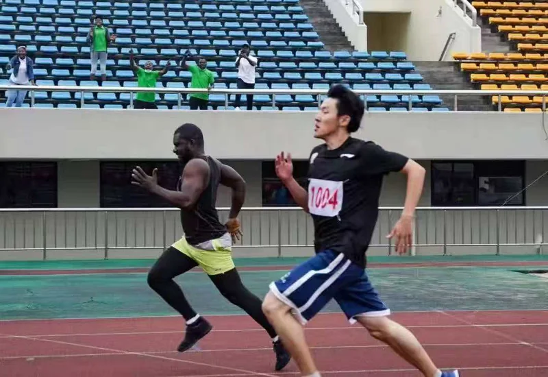
🏃 Running
👥 Team
✈️ TravelVoyagesViajes旅行
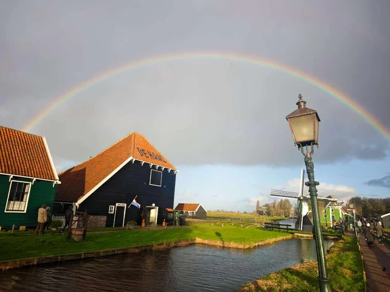
📍 Amsterdam
📍 Budapest
📍 Vatican
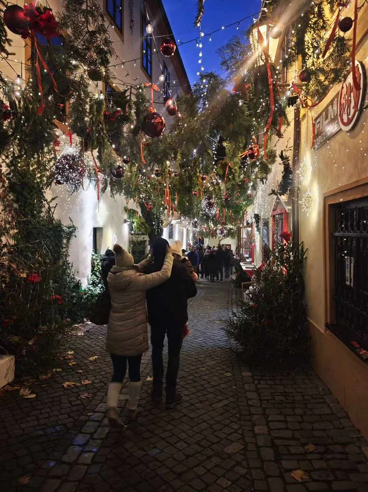
📍 Czech Republic
📍 Norway
📍 Switzerland
📄 Recommendation Letter — ByteDanceLettre de recommandation — ByteDanceCarta de recomendación — ByteDance推荐信 · 字节跳动